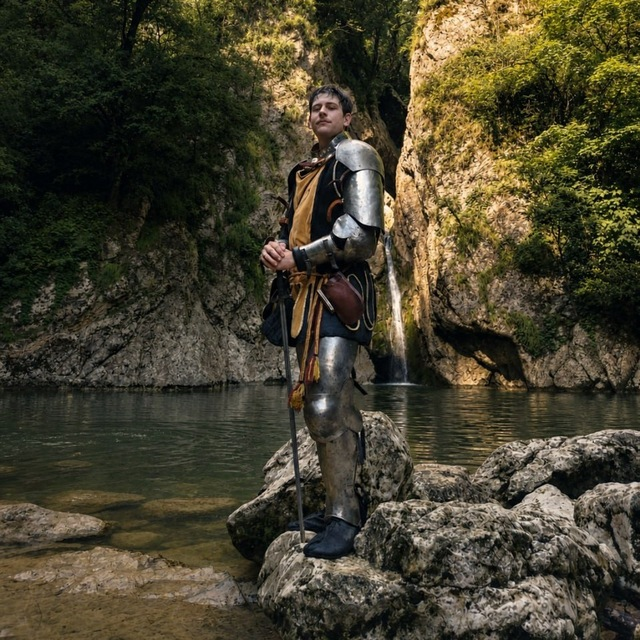
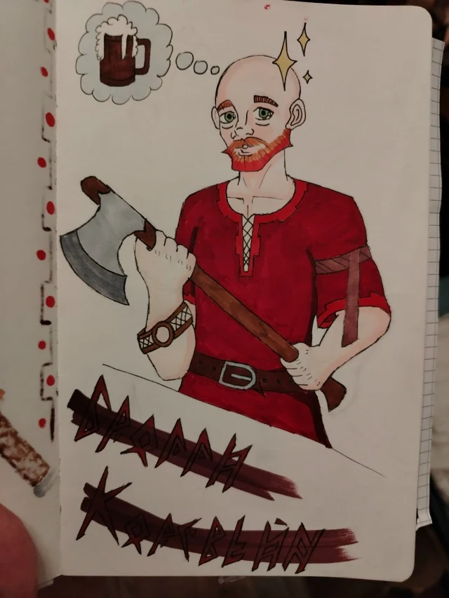
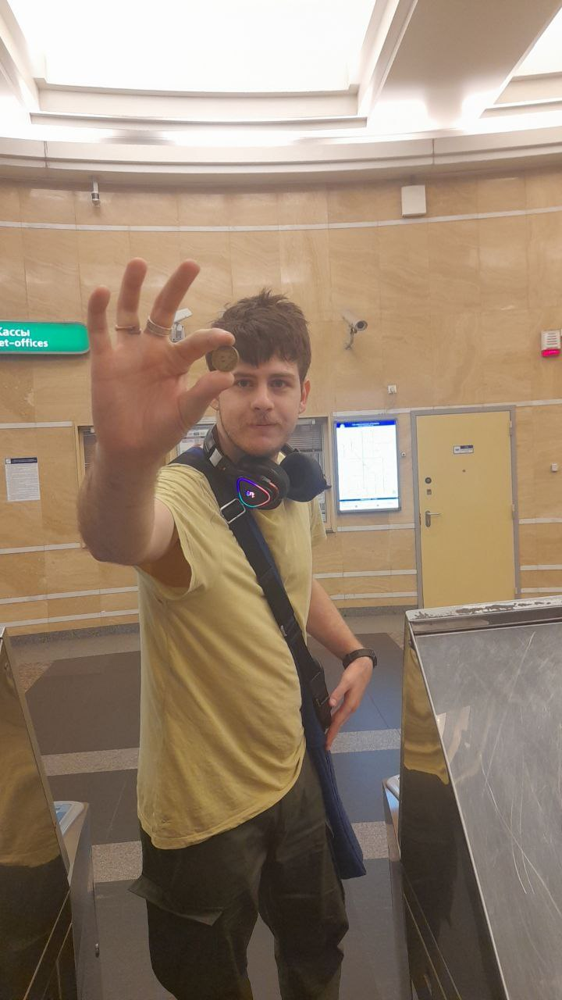
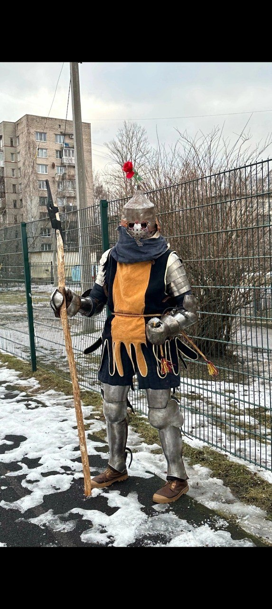
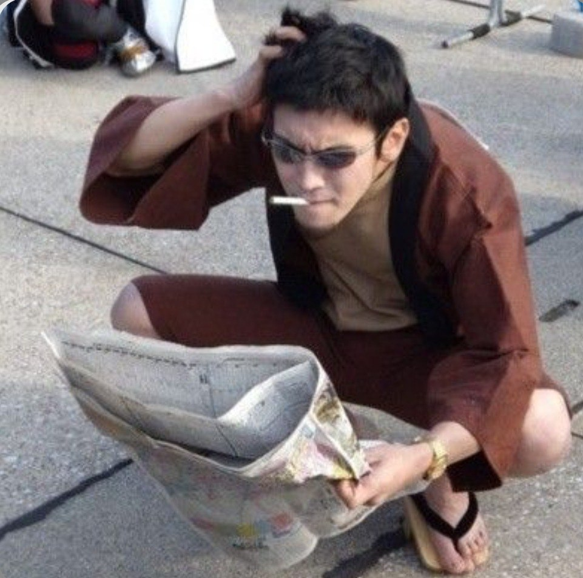
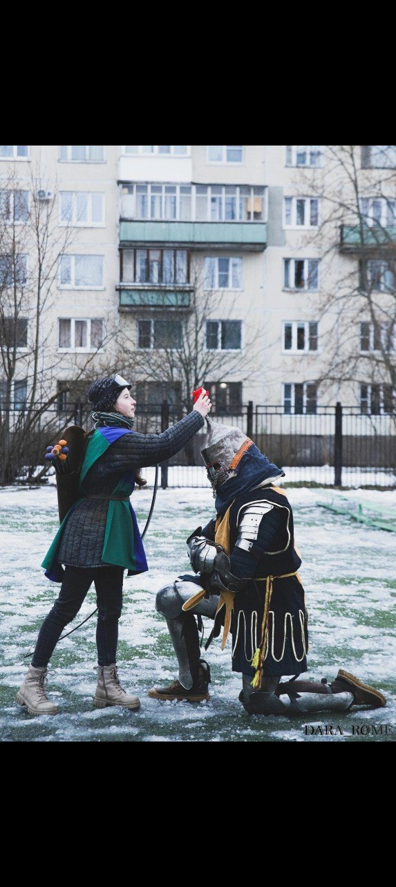

Основа
Любимое оружие, сила и доспех как вторая кожа.
Полевой архив
Прародитель Тристонии · рыцарь · автор боевых веток
Клинки, схемы и заметки с полей — история бойца, который сначала проверяет идею на бумаге, а затем в бою.

Сталь помнит каждое решение.
Боевой стиль
Черновая ветка «Короля Воинов»: четыре уровня, двадцать семь узлов и место для финальных техник.
Открыть полный документсостояние во время боя дающее небольшие бафы на Реакцию, но постоянные.
состояние во время боя дающее небольшие бафы на Попадание Оружием, но постоянные. (воин может быть только в одной Стойке)
разовый бонус при броске на Реакцию, при успехе Воин ловко отходит от противника на безопасную дистанцию не провоцируя атаки и иные скилы. 1/бой
Сопутствующим Действием воин делает обманное движение чтобы запутать противника и Основным Действием ударить его. Противник от такой атаки совершает Реакцию с помехой. Противники у которых Внимательность или Интуиция намного выше мастерства воина могут распознать уловку и нивелировать этот прием. 1/бой
воин получает бафф чтоб устоять на ногах, держать баланс и смягчить урон от падения. Действие вне инициативы. 1/бой
ослабляющая атака которая наносит противнику дебаф на передвижение. Основное Действие 1/бой
идентичен скилу Бегун из Ветки Короля Воинов.
как она есть. Сработает при успешной Реакции Действие вне инициативы. 1/бой
скилл заявляется до броска Инициативы. Большой бонус к инициативе и воин обязательно делает атаку по противнику. 1/бой
большой бонус к Реакции, но только с помощью оружия отражая вражеский удар оружием. Также возможно отразить и некоторые дальние атаки. Действие вне инициативы. 1/бой
воин делает атаку которая не нанесет много урона, но в следующем раунде один следующий удар по противнику будет с преимуществом. Удар может быть от кого угодно помимо воина. Основное Действие. 1/бой
если позволяет окружение то воин получает баф на Реакцию от атаки и ловко прыгает на какую либо возвышенность до 2 метров. Действие вне инициативы. 1/бой
воин делает атаку с бонусом подставляя подножку противнику. Противник упадёт если его бросок Силы или Ловкости будет ниже попадания воина. Основное действие. 1/бой
воин делает атаку которая снижает Выносливость противника. Основное действие. 1/бой
1/бой можно ударить дважды. Можно также скил вместо обычной атаки.
помимо оружия у противника с рук можно выбить любой предмет. Основное действие. 1/бой
атака частично игнорирующая броню, барьеры и резисты. Основное действие. 1/бой
воин частично не получает дебафов если его атакуют сразу несколько противников.
такая атака не наносит много урона, но получает огромный баф к попаданию. Основное действие. 1/бой
при атаке или защите воин с бонусом может взять противника в болевой захват оружием. Провальные попытки выбраться наносит урон. Основное действие при атаке и действие вне инициативы при защите. 1/бой.
воин способен при Реакции перенаправить атаку противнику в другого противника или в предмет. С бонусом. Действие вне инициативы. 1/бой
постоянный большой бонус к Силе Воли когда воина пытаются запугать, навести отчаяние или сбить с толку.
удар способный оглушить противника. Основное действие. 1/бой
воин делает какого либо противника своей жертвой. Огромный бонус ко всем броскам против врага. Сопутствующее действие. 3/игру
автоматически успех для любого применяемого скила. 2/день
постоянный большой бонус к боевым проверкам Интуиции.
Структура истории
Любимое оружие, сила и доспех как вторая кожа.
Толчок, прыжок и точные боевые связки.
Контроль темпа, стойкость и сверхусилие.
Записки оружейника
Пробегите как можно дальше. Прыжок: пробел, ↑ или кнопка.

Личный архив
Фотографии героя и его рыцарских образов.




Полные авторские тексты
Три документа перенесены полностью, без сокращения формулировок.
восстанавливает плоть и кости. При использовании в бою -3 к Инициативе. Проверка 1к12+медицина для определения успеха лечения. 5 мп.
очищает тело от болезней и яда. При использовании в бою -3 к Инициативе. Проверка 1к12+медицина для определения успеха лечения. 5 мп.
маг способен менять цвет жидкости (не более чем на 5 минут), придавать ей любую форму, нагревать, охлаждать и перемещать в воздухе. Размер манипулирующей жидкости до 5 литров. Маг должен видеть жидкость и заклинание не действует на кровь!
во время отдыха, и только, маг способен создать себе резерв маны из которого он может себе или союзнику восстанавливать мп. Сколько мп маг вложит, столько и будет. Резерв существует количество дней равное бонусу Интеллекта мага.
в течении 1 часа маг или цель заклинания могут дышать под водой. 8 мп.
маг магическим взором точечно анализирует потоки маны, болезни, отравления, травмы, инородные вещи и прочие болячки тела, как естественного так и магического характера. По решению мастера к последующему магическому лечению будет большой баф. 7 мп.
восстанавливает цели 5 единиц Выносливости. 5 мп.
Восстанавливающее прикосновение, Очищающее прикосновение или Прилив сил можно использовать волной вокруг мага диаметром 6 метров. Количество союзников которых можно зацепить равно бонусу Интеллекта мага. 11 мп.
на выбор мага он может усилить Силу, Ловкость, Живучесть или Выносливость цели на 1к4. 10 мп
1,5 метровый шар воды который взрывается большими сильными брызгами. Силы заклинания хватает чтоб оглушить и сбить с ног по площади в 6 метров, в также разрушить небольшие сооружения из камня и дерева. 12 мп.
маг способен временно восполнить потерю крови магической водой которая заменяет отсутствующую кровь. В течении одного дня цель не получает штрафов от потери крови. 15 мп.
Состоит из воды и сферы внутри, до которой нужно ещё дотянуться в толще воды. Элементаль получает урон если сбивать с него куски воды, испарять воду и бить по сфере. Ему можно отдавать команду Сопутствующим Действием или дать одну простую команду оставив в режиме автоматики. Облик определяется совместно игроком с мастером. 17 мп.
маг заключает цель в водный пузырь на 1к6 раундов. Цель должна успешно пройти проверку Силы или Интеллекта (если цель владеет магией), при провале цель получает дебафф на физ. статы в размере 1к6, при успехе заклинание заканчивается. Маг может в любой момент решить оставить цели возможность дышать. 14 мп.
цель получает магическое покрытие которое защищает от заклинаний Атакующего и Ослабляющего типа, а также дает пассивное небольшое лечение. А также дает физ защиту как средняя броня. 17 мп.
как Водный Элементаль, но намного пизже. Игрок совместно с мастером создаёт этого монстра и что он умеет. 24 мп.
это заклинание лечит тело до нужного состояния для возвращения души из Серой Долины. В самой Серой Долине душа возвращает часть Силы Воли необходимой для желания вернуться в мир живых и находит берег на котором лодка. На лодке душа и плывет обратно в мир живых и просыпается в своем теле. 46 мп.
до 12 метров длиной, 3 метров в высоту и 1 метр в толщину. Можно менять размер, сделать замкнутым кругом или даже сделать как мост. Отлично держит физ урон и крайне эффективно поглощает Атакующую и Ослабляющую магию. 21 мп.
в радиусе 12 метров от мага начинается магический дождь который исцеляет и восстанавливает 15 мп всем кого маг считает союзником. 25 мп.
огромная волна которая несет колоссальное разрушение и урон по площади в 12 метров. 22 мп.
тело мага меняется, становясь водой на 1к8 раундов. В любой момент маг может стать лужой воды и пройти через любые отверстия и слиться с жидкостью. А также в этом состоянии 80% к физ урону и 50% резист к магии. 24 мп.
цель получает высокую скорость плавания, хорошее зрение в воде, подводное дыхание и почти не получает дебафов от нахождения в воде на 1 час. 20 мп.
состояние во время боя дающее небольшие бафы на Реакцию, но постоянные.
состояние во время боя дающее небольшие бафы на Попадание Оружием, но постоянные. (воин может быть только в одной Стойке)
разовый бонус при броске на Реакцию, при успехе Воин ловко отходит от противника на безопасную дистанцию не провоцируя атаки и иные скилы. 1/бой
Сопутствующим Действием воин делает обманное движение чтобы запутать противника и Основным Действием ударить его. Противник от такой атаки совершает Реакцию с помехой. Противники у которых Внимательность или Интуиция намного выше мастерства воина могут распознать уловку и нивелировать этот прием. 1/бой
воин получает бафф чтоб устоять на ногах, держать баланс и смягчить урон от падения. Действие вне инициативы. 1/бой
ослабляющая атака которая наносит противнику дебаф на передвижение. Основное Действие 1/бой
идентичен скилу Бегун из Ветки Короля Воинов.
как она есть. Сработает при успешной Реакции Действие вне инициативы. 1/бой
скилл заявляется до броска Инициативы. Большой бонус к инициативе и воин обязательно делает атаку по противнику. 1/бой
большой бонус к Реакции, но только с помощью оружия отражая вражеский удар оружием. Также возможно отразить и некоторые дальние атаки. Действие вне инициативы. 1/бой
воин делает атаку которая не нанесет много урона, но в следующем раунде один следующий удар по противнику будет с преимуществом. Удар может быть от кого угодно помимо воина. Основное Действие. 1/бой
если позволяет окружение то воин получает баф на Реакцию от атаки и ловко прыгает на какую либо возвышенность до 2 метров. Действие вне инициативы. 1/бой
воин делает атаку с бонусом подставляя подножку противнику. Противник упадёт если его бросок Силы или Ловкости будет ниже попадания воина. Основное действие. 1/бой
воин делает атаку которая снижает Выносливость противника. Основное действие. 1/бой
1/бой можно ударить дважды. Можно также скил вместо обычной атаки.
помимо оружия у противника с рук можно выбить любой предмет. Основное действие. 1/бой
атака частично игнорирующая броню, барьеры и резисты. Основное действие. 1/бой
воин частично не получает дебафов если его атакуют сразу несколько противников.
такая атака не наносит много урона, но получает огромный баф к попаданию. Основное действие. 1/бой
при атаке или защите воин с бонусом может взять противника в болевой захват оружием. Провальные попытки выбраться наносит урон. Основное действие при атаке и действие вне инициативы при защите. 1/бой.
воин способен при Реакции перенаправить атаку противнику в другого противника или в предмет. С бонусом. Действие вне инициативы. 1/бой
постоянный большой бонус к Силе Воли когда воина пытаются запугать, навести отчаяние или сбить с толку.
удар способный оглушить противника. Основное действие. 1/бой
воин делает какого либо противника своей жертвой. Огромный бонус ко всем броскам против врага. Сопутствующее действие. 3/игру
автоматически успех для любого применяемого скила. 2/день
постоянный большой бонус к боевым проверкам Интуиции.
лидер с абсолютной властью. Основатель гильдии.
советник главы, чаще всего занимается большей частью управленческих дел, в том числе снабжение и логистика.
чемпион гильдии, сильнейший боец, будь то волшебник или воин. Отвечает за посвящение в клыки и создание команд с кураторами.
влиятельные члены гильдии которые выполнили не одно тяжёлое задание и имеющие немалый опыт и доверие. А также заслужившие значок гильдии из гронира. Именно клыки чаще всего становятся кураторами команд из чешуек.
члены гильдии пережившие первые серьёзные задания и заслужившие считаться полноценными представителями гильдии.
зелёные новички которые выполняет самые простые задание, а также бытовые обязательства в здании гильдии.
Авторские материалы
Материалы Ираклия, ранее опубликованные отдельной страницей: первоэлементы мира, характеристики, навыки и игровые правила. Авторский черновик, а не финальная редакция системы.
Физическое воплощение мира. Выражается в физических законах природы, биологических процессах в телах, лесах, океанах, пустынях и прочих местах, по которым можно перемещаться.
Сакральное воплощение мира. Его нельзя познать разумом или физическим восприятием, но можно ощутить эмоционально и интуитивно. К Духу относятся душа, интуиция, сила воли, всё божественное и сами боги.
Сила, упорядочивающая вселенную и поддерживающая баланс между Духом и Материей. Благодаря Разуму мироздание меняется и совершенствуется; от него существует магия, способная менять реальность, а также способность мыслить и анализировать.
Каждое живое существо имеет душу. При рождении она получает предрасположенность к одному из фундаментальных элементов. Это влияет на рост и развитие, но не ограничивает существо: свобода воли позволяет самостоятельно выбирать путь.
Из-за первозданной природы обладают фиксированной предрасположенностью к Материи.
По решению верховных мастеров имеют врождённую предрасположенность к Разуму.
Базовое значение характеристики 10 даёт +0. Каждая единица выше даёт +1 к проверке: например, 14 даёт +4. Значения ниже 10 дают штраф: например, 8 даёт −2.
Максимальный лимит характеристик — 20. Обычных тренировок недостаточно, чтобы его превысить: нужны легендарные усилия, магия или божественное благословение.
Перенос тяжестей, сила физических ударов и мышечный объём.
Грация, рефлексы, тонкая моторика и общая скорость передвижения.
Перенос боли, перегрузок и неблагоприятной среды, продолжительность физических действий.
Быстрое решение вопросов, импровизация и мгновенная реакция на опасности.
Память, логическое мышление, анализ данных и глубокое академическое понимание.
Способность замечать скрытые детали, звуки и изменения окружения всеми органами чувств.
Общение, красноречие, переговоры и личное обаяние.
Хладнокровие, контроль эмоций, сопротивление ментальному удару и способность не сдаваться.
Бессознательное понимание мира на духовном уровне и верные решения на основе чутья.
В Аркен-Харе нет жёстко заданного списка умений. У каждого героя формируется уникальный набор навыков по предыстории и жизненному опыту. При проверке бонус навыка суммируется со связанной характеристикой.
Навык нельзя развить выше +10 обычными способами. Преодолеть предел позволяют только магические, божественные и иные сверхъестественные воздействия.
Управление ездовым животным при быстром или экстремальном перемещении. Проверка: d20 + модификатор Ловкости + бонус навыка, вплоть до +10.
Умение аргументировать, договариваться и склонять собеседника к нужному решению.
Считывание эмоционального состояния, намерений и невысказанных реакций другого существа.
Разбор данных, поиск закономерностей и быстрое построение рабочих выводов.
Накопленная учёность и способность применить сведения в конкретной ситуации.
Сохранение контроля над собой под давлением, страхом и эмоциональной нагрузкой.
Практический навык обращения с выбранным оружием и выполнения боевых приёмов.